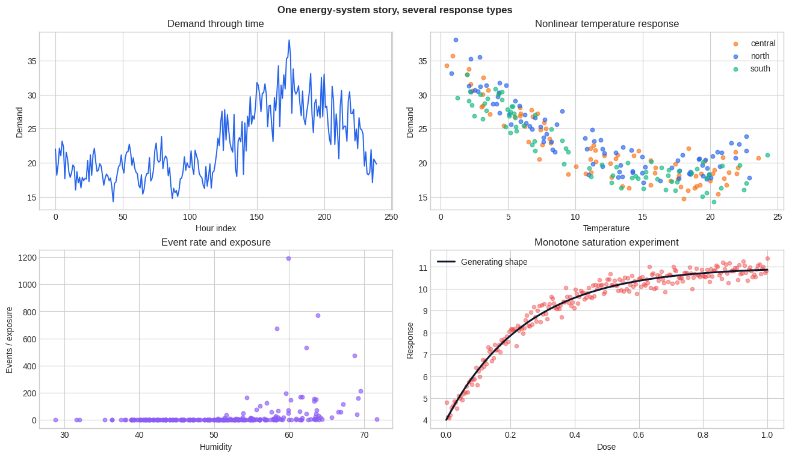
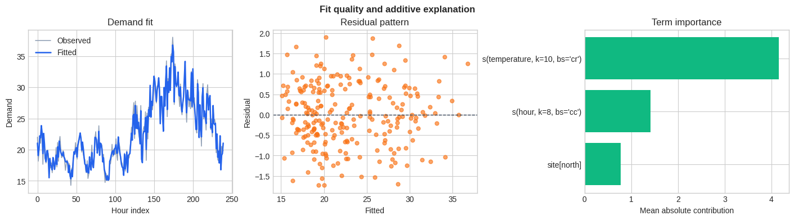
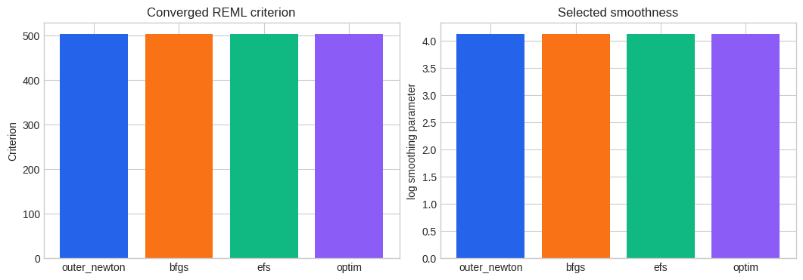
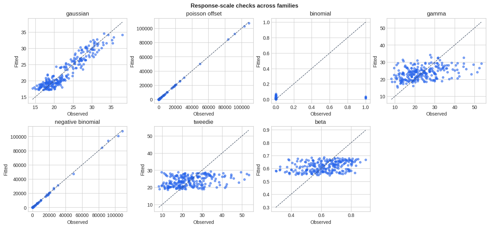
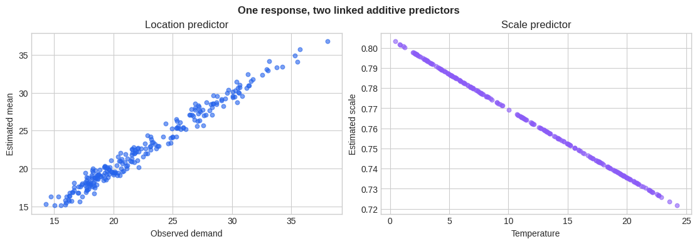
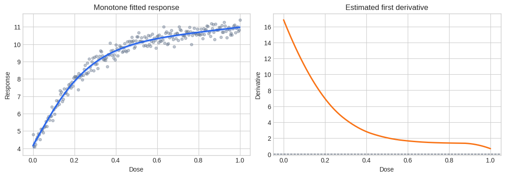
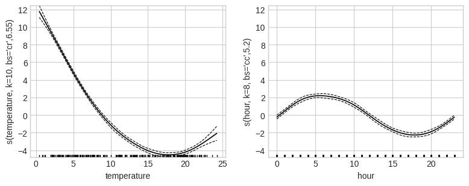
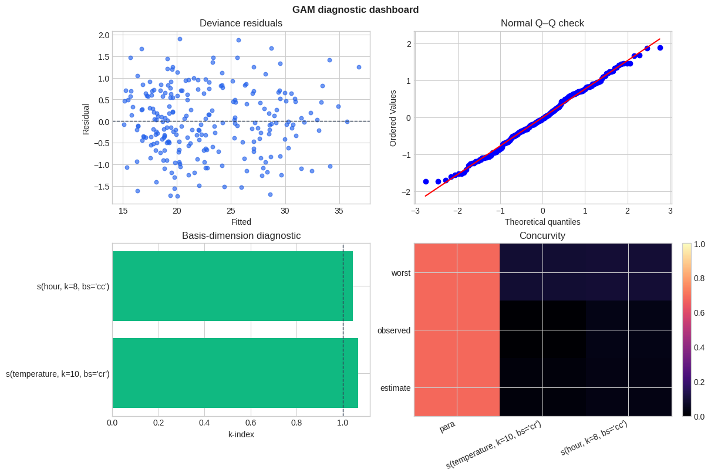
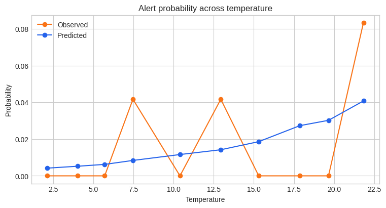

GAM: theory, fitting, inference, and constrained effects
This notebook develops one coherent energy-system case study while introducing NAMpy’s strict mgcv-aligned GAM backend. We model continuous demand, event counts, binary alerts, positive costs, and distributional location/scale using the same covariates. Every example is executed during notebook generation, so the checked-in artifact includes fitted results and visual diagnostics.
1. Additive predictors and exponential-family responses
For an exponential-family response, the conditional mean \(\mu_i\) is connected to an additive predictor through a link \(g\):
The offset \(o_i\) has a fixed coefficient of one. Each smooth is represented in a finite basis,
so fitting is finite-dimensional. A roughness penalty \(\lambda_j\boldsymbol\beta_j^\top\mathbf S_j\boldsymbol\beta_j\) discourages wiggly functions. The basis dimension \(K_j\) sets an upper limit on complexity; the smoothing parameter \(\lambda_j\) determines how much of that capacity is used.
2. Penalized likelihood, identifiability, and uncertainty
For fixed smoothing parameters, coefficients maximize
PIRLS supplies the local weighted least-squares problem for ordinary families. Smooths commonly contain an unpenalized null space (for example constants or linear trends), so side conditions remove overlap with the intercept and other terms. This is why a reported smooth is an identified contribution rather than an arbitrary basis coefficient vector.
The influence matrix \(\mathbf A\) maps working observations to fitted values. Its trace gives the model effective degrees of freedom (EDF); term-wise EDF measures how much flexibility survives penalization. NAMpy exposes Bayesian and frequentist covariance choices. Pointwise standard errors quantify coefficient uncertainty conditional on the fitted model and, when requested, can include smoothing-parameter uncertainty.
3. Selecting smoothness
GCV and UBRE/AIC estimate prediction risk, whereas ML and REML optimize a Laplace-approximated marginal likelihood. REML usually offers stable default behavior for Gaussian and many generalized responses because fixed effects are accounted for when estimating smoothness. Outer iteration alternates a full coefficient fit with updates to log smoothing parameters.
NAMpy ports the supported mgcv optimizer routes rather than treating their names as interchangeable aliases:
outer_newton: derivative-based outer Newton iteration;bfgs: quasi-Newton updates;efs: extended Fellner-Schall updates where supported; andoptim: theoptim-compatible route.
An optimizer is not a modeling assumption by itself: family, criterion, penalty structure, and optimizer jointly determine whether a route is supported. Unsupported combinations raise explicitly.
Primary references
Wood (2011), Fast stable restricted maximum likelihood and marginal likelihood estimation of semiparametric generalized linear models. This is the main reference for stable ML/REML smoothness selection and outer iteration.
Pya and Wood (2015), Shape constrained additive models. This develops the constrained P-spline parameterization, smoothness selection, and inference used in the shape-constrained section.
NAMpy follows the upstream mgcv and scam implementations as its behavioral specification; the papers explain the statistical construction.
[1]:
import matplotlib.pyplot as plt
import numpy as np
import pandas as pd
plt.style.use("seaborn-v0_8-whitegrid")
COLORS = ["#2563EB", "#F97316", "#10B981", "#8B5CF6", "#EF4444"]
rng = np.random.default_rng(7)
n = 240
time = np.arange(n)
hour = time % 24
temperature = 12 + 9 * np.sin(2 * np.pi * time / n) + rng.normal(0, 1.8, n)
humidity = np.clip(65 - 1.1 * temperature + rng.normal(0, 5, n), 15, 95)
site = pd.Categorical(rng.choice(["north", "central", "south"], size=n))
exposure = rng.uniform(80, 160, n)
site_effect = pd.Series(site).map(
{"north": 1.4, "central": 0.0, "south": -1.0}
).astype(float).to_numpy()
daily_cycle = 2.2 * np.sin(2 * np.pi * hour / 24)
temperature_effect = 0.055 * (temperature - 18) ** 2
mean_demand = 18 + daily_cycle + temperature_effect + site_effect
data = pd.DataFrame({
"time": time,
"hour": hour,
"temperature": temperature,
"humidity": humidity,
"site": site,
"exposure": exposure,
"log_exposure": np.log(exposure),
})
data["demand"] = mean_demand + rng.normal(0, 0.8, n)
event_rate = np.exp(-4.2 + 0.035 * (temperature - 18) ** 2 + 0.008 * humidity)
data["events"] = rng.poisson(exposure * event_rate)
alert_probability = 1 / (1 + np.exp(-(-3.2 + 0.12 * (temperature - 22))))
data["alert"] = rng.binomial(1, alert_probability)
mean_cost = np.exp(2.2 + 0.018 * humidity + 0.025 * np.maximum(temperature - 20, 0))
data["cost"] = rng.gamma(shape=8.0, scale=mean_cost / 8.0)
data["efficiency"] = np.clip(
rng.beta(8 + 0.12 * temperature, 4 + 0.03 * humidity), 1e-4, 1 - 1e-4
)
data["dose"] = np.linspace(0, 1, n)
shape_mean = 4 + 7 * (1 - np.exp(-4 * data["dose"]))
data["shape_y"] = shape_mean + rng.normal(0, 0.25, n)
data["shape_count"] = rng.poisson(np.exp(0.4 + 1.2 * data["dose"]))
[2]:
site_colors = {"north": COLORS[0], "central": COLORS[1], "south": COLORS[2]}
fig, axes = plt.subplots(2, 2, figsize=(13, 7.5), constrained_layout=True)
axes[0, 0].plot(data["time"], data["demand"], color=COLORS[0], linewidth=1.4)
axes[0, 0].set(title="Demand through time", xlabel="Hour index", ylabel="Demand")
for level in data["site"].cat.categories:
subset = data["site"] == level
axes[0, 1].scatter(
data.loc[subset, "temperature"],
data.loc[subset, "demand"],
s=22,
alpha=0.65,
color=site_colors[str(level)],
label=str(level),
)
axes[0, 1].set(title="Nonlinear temperature response", xlabel="Temperature", ylabel="Demand")
axes[0, 1].legend(frameon=False)
axes[1, 0].scatter(data["humidity"], data["events"] / data["exposure"], s=22, alpha=0.65, color=COLORS[3])
axes[1, 0].set(title="Event rate and exposure", xlabel="Humidity", ylabel="Events / exposure")
axes[1, 1].scatter(data["dose"], data["shape_y"], s=20, alpha=0.45, color=COLORS[4])
axes[1, 1].plot(data["dose"], shape_mean, color="#0F172A", linewidth=2.2, label="Generating shape")
axes[1, 1].set(title="Monotone saturation experiment", xlabel="Dose", ylabel="Response")
axes[1, 1].legend(frameon=False)
fig.suptitle("One energy-system story, several response types", fontweight="bold")
plt.show()
plt.close(fig)

4. First model: Gaussian demand with cyclic and ordinary smooths
Demand has a nonlinear temperature response, a 24-hour cycle, and site-level differences. A cubic regression spline estimates the temperature shape; a cyclic cubic spline forces midnight and the end of the day to join smoothly; the categorical site enters parametrically.
GAMRegressor, GAMClassifier, and GAMLSS provide task-specific sklearn-style methods while exposing the fitted parity backend as gam_.
[3]:
from nampy.models import GAMClassifier, GAMLSS, GAMRegressor
model = GAMRegressor(
formula=(
"demand ~ s(temperature, k=10, bs='cr') "
"+ s(hour, k=8, bs='cc') + site"
),
optimize_smoothing=True,
smoothing_method="reml",
)
model.get_params(deep=False)
model.fit(data)
predictions = model.predict(data)
r2 = model.score(data, data["demand"])
metrics = model.evaluate(data, data["demand"])
components = model.predict_components(data)
components.validate_additive_reconstruction()
explanation = model.explain_terms(data, max_bins=30)
importance = model.term_importance(data)
display(model.summary())
display(importance)
display(explanation.head(12))
Family: gaussian
Link function: identity
Formula:
demand ~ s(temperature, k=10, bs='cr') + s(hour, k=8, bs='cc') + site
Parametric coefficients:
Estimate Std. Error t value Pr(>|t|)
(Intercept) 22.534 0.090328 249.47 <2e-16 ***
site[north] 1.3293 0.12433 10.691 <2e-16 ***
site[south] -0.91813 0.13085 -7.0168 2.634e-11 ***
---
Signif. codes: 0 '***' 0.001 '**' 0.01 '*' 0.05 '.' 0.1 ' ' 1
Approximate significance of smooth terms:
edf Ref.df F p-value
s(temperature, k=10, bs='cr') 6.5526 7.6755 1119.3 <2e-16 ***
s(hour, k=8, bs='cc') 5.2013 6 157.61 <2e-16 ***
---
Signif. codes: 0 '***' 0.001 '**' 0.01 '*' 0.05 '.' 0.1 ' ' 1
R-sq.(adj) = 0.976 Deviance explained = 97.7%
-REML = 304.31 Scale est. = 0.62172 n = 240
GAMSummary(family_name='gaussian', link_name='identity', formula="demand ~ s(temperature, k=10, bs='cr') + s(hour, k=8, bs='cc') + site", p_coeff=array([22.53434611, 1.3293028 , -0.91813009]), se=array([0.09032826, 0.12433323, 0.13084758, 0.19317468, 0.15615294,
0.18051927, 0.1758145 , 0.16261441, 0.1755368 , 0.15106531,
0.1953019 , 0.40658691, 0.13873112, 0.13681816, 0.13853482,
0.13992446, 0.13706636, 0.13774241]), p_t=array([249.47171401, 10.6914524 , -7.01679057]), p_pv=array([3.91710701e-277, 7.63361955e-022, 2.63371919e-011]), p_table= Estimate Std. Error t value Pr(>|t|)
(Intercept) 22.534346 0.090328 249.471714 3.917107e-277
site[north] 1.329303 0.124333 10.691452 7.633620e-22
site[south] -0.918130 0.130848 -7.016791 2.633719e-11, pterms_table= label df wald_stat p_value test covariance dispersion
0 site 2.0 161.053047 3.727986e-44 F bayes 0.621716, s_table= label edf ref_df wald_stat p_value \
0 s(temperature, k=10, bs='cr') 6.552618 7.675521 1119.307876 0.0
1 s(hour, k=8, bs='cc') 5.201306 6.000000 157.613828 0.0
test term_type basis_name covariance dispersion
0 F smooth cr bayes 0.621716
1 F smooth cc bayes 0.621716 , residual_df=225.24607625201773, m=2, scale=0.6217162949854625, dispersion=0.6217162949854625, scale_estimated=True, r_sq=0.97599862344129, dev_expl=0.9773798498138219, null_deviance=6190.903015002372, deviance=140.0391559874174, n=240, np=18, rank=18, method='-REML', sp_criterion=304.3075403577923, covariance='bayes', edf_total=14.75392374798226, metadata={})
| term | term_type | output | importance | |
|---|---|---|---|---|
| 0 | s(temperature, k=10, bs='cr') | main | 0 | 4.162145 |
| 1 | s(hour, k=8, bs='cc') | main | 0 | 1.412007 |
| 2 | site[north] | main | 0 | 0.770501 |
| term | term_type | output | value | contribution | count | importance | |
|---|---|---|---|---|---|---|---|
| 0 | site[north] | main | 0 | site[north] | 0.204321 | 240 | 0.770501 |
| 1 | s(temperature, k=10, bs='cr') | main | 0 | 1.2705 | 10.438221 | 8 | 4.162145 |
| 2 | s(temperature, k=10, bs='cr') | main | 0 | 2.295 | 9.060311 | 8 | 4.162145 |
| 3 | s(temperature, k=10, bs='cr') | main | 0 | 2.797 | 8.120147 | 8 | 4.162145 |
| 4 | s(temperature, k=10, bs='cr') | main | 0 | 3.374 | 7.392107 | 8 | 4.162145 |
| 5 | s(temperature, k=10, bs='cr') | main | 0 | 3.999 | 6.154551 | 8 | 4.162145 |
| 6 | s(temperature, k=10, bs='cr') | main | 0 | 4.7115 | 5.321538 | 8 | 4.162145 |
| 7 | s(temperature, k=10, bs='cr') | main | 0 | 5.262 | 4.476857 | 8 | 4.162145 |
| 8 | s(temperature, k=10, bs='cr') | main | 0 | 5.7 | 3.844946 | 8 | 4.162145 |
| 9 | s(temperature, k=10, bs='cr') | main | 0 | 6.322 | 3.044042 | 8 | 4.162145 |
| 10 | s(temperature, k=10, bs='cr') | main | 0 | 6.924 | 2.205016 | 8 | 4.162145 |
| 11 | s(temperature, k=10, bs='cr') | main | 0 | 7.4225 | 1.478768 | 8 | 4.162145 |
[4]:
observed = data["demand"].to_numpy()
residual = observed - predictions
importance_plot = importance.sort_values("importance")
fig, axes = plt.subplots(1, 3, figsize=(14, 3.8), constrained_layout=True)
axes[0].plot(data["time"], observed, color="#94A3B8", linewidth=1.2, label="Observed")
axes[0].plot(data["time"], predictions, color=COLORS[0], linewidth=1.8, label="Fitted")
axes[0].set(title="Demand fit", xlabel="Hour index", ylabel="Demand")
axes[0].legend(frameon=False)
axes[1].scatter(predictions, residual, s=24, alpha=0.65, color=COLORS[1])
axes[1].axhline(0, color="#334155", linestyle="--", linewidth=1)
axes[1].set(title="Residual pattern", xlabel="Fitted", ylabel="Residual")
axes[2].barh(importance_plot["term"], importance_plot["importance"], color=COLORS[2])
axes[2].set(title="Term importance", xlabel="Mean absolute contribution")
fig.suptitle("Fit quality and additive explanation", fontweight="bold")
plt.show()
plt.close(fig)

5. Smooth construction gallery
Different bases encode different boundary behavior and penalty null spaces. The choice should follow the covariate geometry rather than be treated as a generic tuning label.
Term |
Role |
|---|---|
|
cubic regression spline; |
|
cyclic cubic spline for periodic covariates |
|
P-spline with difference penalties |
|
thin-plate regression spline; |
|
scale-invariant tensor product including main-effect directions |
|
tensor interaction with marginal main-effect directions removed |
|
random-effect/ridge-penalized factor block |
|
factor-specific smooths with different identifiability structures |
Tensor products construct marginal bases first and combine their columns and penalties. te is suitable for a whole surface; ti is useful when marginal main effects are already present.
[5]:
from nampy.gam import GAM
smooth_examples = {
"cubic": GAM(formula="demand ~ s(temperature, bs='cr', k=10)"),
"shrinkage_cubic": GAM(formula="demand ~ s(temperature, bs='cs', k=10)"),
"cyclic": GAM(formula="demand ~ s(hour, bs='cc', k=8)"),
"p_spline": GAM(formula="demand ~ s(temperature, bs='ps', k=10)"),
"thin_plate": GAM(formula="demand ~ s(temperature, bs='tp', k=10)"),
"shrinkage_thin_plate": GAM(formula="demand ~ s(temperature, bs='ts', k=10)"),
"tensor_surface": GAM(
formula="demand ~ te(temperature, humidity, bs=['cr', 'ps'], k=[6, 6])"
),
"tensor_interaction": GAM(
formula=(
"demand ~ s(temperature, bs='cr', k=8) "
"+ s(humidity, bs='ps', k=8) "
"+ ti(temperature, humidity, bs=['cr', 'ps'], k=[6, 6])"
)
),
"random_effect": GAM(formula="demand ~ s(site, bs='re')"),
"factor_smooth": GAM(
formula="demand ~ s(site, temperature, bs='fs', k=5, xt='cr')"
),
"sum_to_zero_factor_smooth": GAM(
formula="demand ~ s(site, temperature, bs='sz', k=5, xt='cr')"
),
}
sorted(smooth_examples)
[5]:
['cubic',
'cyclic',
'factor_smooth',
'p_spline',
'random_effect',
'shrinkage_cubic',
'shrinkage_thin_plate',
'sum_to_zero_factor_smooth',
'tensor_interaction',
'tensor_surface',
'thin_plate']
6. Criteria and outer optimizers
The following objects demonstrate the supported public optimizer names. In practice, compare converged endpoints and diagnostics rather than choosing the optimizer with the smallest iteration count. fixed smoothing is also useful for reproducible sensitivity analysis and constructor-level parity work.
[6]:
optimizer_models = {
name: GAM(
formula="demand ~ s(temperature, bs='cr', k=10)",
family="gaussian",
optimize_smoothing=True,
smoothing_method="reml",
smoothing_optimizer=name,
)
for name in ("outer_newton", "bfgs", "efs", "optim")
}
fixed_model = GAM(
formula="demand ~ s(temperature, bs='cr', k=10)",
family="gaussian",
optimize_smoothing=False,
smoothing_method="fixed",
smoothing_params=[0.7],
)
fitted_optimizers = {
name: candidate.fit(data=data) for name, candidate in optimizer_models.items()
}
optimizer_summary = pd.DataFrame(
{
"optimizer": name,
"criterion": candidate.fit_result(include_covariances=False).criterion_value,
"log_sp": np.log(candidate.fit_result(include_covariances=False).smoothing_params[0]),
}
for name, candidate in fitted_optimizers.items()
)
fig, axes = plt.subplots(1, 2, figsize=(10.5, 3.6), constrained_layout=True)
axes[0].bar(optimizer_summary["optimizer"], optimizer_summary["criterion"], color=COLORS[:4])
axes[0].set(title="Converged REML criterion", ylabel="Criterion")
axes[1].bar(optimizer_summary["optimizer"], optimizer_summary["log_sp"], color=COLORS[:4])
axes[1].set(title="Selected smoothness", ylabel="log smoothing parameter")
plt.show()
plt.close(fig)

7. Families and links in the same application
The linear predictor always has additive structure, but the family determines the conditional distribution and the inverse-link interpretation.
Response |
Example family/link |
Interpretation |
|---|---|---|
continuous demand |
Gaussian/identity |
additive changes in the mean |
event count |
Poisson/log |
additive log-rate; exposure enters as an offset |
binary alert |
Binomial/logit |
additive log odds |
positive cost |
Gamma/log |
additive log mean with mean-dependent variance |
overdispersed count |
negative binomial/log |
Poisson-like mean with extra dispersion |
proportion |
beta regression/logit |
conditional mean in \((0,1)\) plus precision |
positive mass with zeros |
Tweedie/log |
compound Poisson-Gamma mean |
ordered category |
ordered categorical |
thresholded latent predictor |
Family choice is not merely a transformation of y: it determines variance, deviance, likelihood, working weights, residuals, and sometimes additional parameters optimized jointly with smoothness.
[7]:
family_models = {
"gaussian": GAM(
formula="demand ~ s(temperature, bs='cr', k=10) + site",
family="gaussian",
optimize_smoothing=True,
smoothing_method="reml",
),
"poisson_offset": GAM(
formula=(
"events ~ s(temperature, bs='cr', k=9) "
"+ s(humidity, bs='ps', k=8) + offset(log_exposure)"
),
family="poisson",
optimize_smoothing=True,
smoothing_method="ubre",
smoothing_optimizer="bfgs",
),
"binomial": GAM(
formula="alert ~ s(temperature, bs='cr', k=9) + site",
family={"name": "binomial", "link": "logit"},
optimize_smoothing=True,
smoothing_method="reml",
),
"gamma": GAM(
formula="cost ~ s(humidity, bs='cr', k=9) + s(temperature, bs='ps', k=8)",
family={"name": "gamma", "link": "log"},
optimize_smoothing=True,
smoothing_method="reml",
),
"negative_binomial": GAM(
formula="events ~ s(temperature, bs='cr', k=9) + offset(log_exposure)",
family={"name": "nb"},
optimize_smoothing=True,
smoothing_method="reml",
),
"tweedie": GAM(
formula="cost ~ s(temperature, bs='cr', k=9)",
family={"name": "tweedie", "link": "log"},
optimize_smoothing=True,
smoothing_method="reml",
),
"beta": GAM(
formula="efficiency ~ s(temperature, bs='cr', k=9)",
family={"name": "betar", "link": "logit", "theta": 12.0},
optimize_smoothing=True,
smoothing_method="reml",
),
}
fitted_families = {
name: candidate.fit(data=data) for name, candidate in family_models.items()
}
response_columns = {
"gaussian": "demand",
"poisson_offset": "events",
"binomial": "alert",
"gamma": "cost",
"negative_binomial": "events",
"tweedie": "cost",
"beta": "efficiency",
}
fig, axes = plt.subplots(2, 4, figsize=(14, 6.5), constrained_layout=True)
for ax, (name, candidate) in zip(axes.flat, fitted_families.items(), strict=False):
observed = data[response_columns[name]].to_numpy()
fitted = np.asarray(candidate.predict(data, type="response")).reshape(-1)
ax.scatter(observed, fitted, s=18, alpha=0.55, color=COLORS[0])
lo, hi = min(observed.min(), fitted.min()), max(observed.max(), fitted.max())
ax.plot([lo, hi], [lo, hi], "--", color="#475569", linewidth=1)
ax.set(title=name.replace("_", " "), xlabel="Observed", ylabel="Fitted")
axes.flat[-1].axis("off")
fig.suptitle("Response-scale checks across families", fontweight="bold")
plt.show()
plt.close(fig)

8. Multi-linear-predictor GAMLSS models
GAMLSS owns statistical models with more than one additive predictor. For Gaussian location-scale modeling, the normal family uses one predictor for the conditional mean and another for the standard deviation. Each predictor has its own formula, design matrix, smooths, penalties, and offsets, while joint likelihood derivatives couple their estimation.
This is different from fitting two unrelated GAMs: both predictors describe one response distribution and their covariance follows from one joint fit.
[8]:
location_scale = GAMLSS(
formula={
"mu": "demand ~ s(temperature, bs='cr', k=9) + s(hour, bs='cc', k=8) + site",
"sigma": "~ s(temperature, bs='cr', k=7)",
},
family="normal",
optimize_smoothing=True,
smoothing_method="ml",
smoothing_optimizer="outer_newton",
)
gamma_location_scale = GAMLSS(
formula={
"mu": "cost ~ s(temperature, bs='cr', k=8) + s(humidity, bs='ps', k=8)",
"sigma": "~ 1",
},
family="gamma",
optimize_smoothing=True,
smoothing_method="ml",
smoothing_optimizer="outer_newton",
select=True,
)
location_scale.fit(data)
mean_and_scale = location_scale.predict(data)
mean_and_scale_se = location_scale.standard_errors(data)
fig, axes = plt.subplots(1, 2, figsize=(11, 3.8), constrained_layout=True)
axes[0].scatter(data["demand"], mean_and_scale[:, 0], s=22, alpha=0.6, color=COLORS[0])
axes[0].set(title="Location predictor", xlabel="Observed demand", ylabel="Estimated mean")
axes[1].scatter(data["temperature"], mean_and_scale[:, 1], s=22, alpha=0.6, color=COLORS[3])
axes[1].set(title="Scale predictor", xlabel="Temperature", ylabel="Estimated scale")
fig.suptitle("One response, two linked additive predictors", fontweight="bold")
plt.show()
plt.close(fig)

9. Shape-constrained GAM: monotone saturation
Engineering knowledge says the response in the dose experiment should never decrease. An unconstrained smooth can violate that assumption in sparse regions. The mpi basis uses a nonlinear coefficient transform whose positive increments enforce monotonic increase, while a P-spline penalty still controls roughness.
Pya and Wood’s construction changes the coefficient parameterization rather than clipping predictions after fitting. Consequently, prediction, derivatives, covariance transport, and diagnostics operate on a genuinely shape-valid fitted function.
[9]:
monotone_fixed = GAM(
formula="shape_y ~ s(dose, bs='mpi', k=10)",
family="gaussian",
optimize_smoothing=False,
smoothing_method="fixed",
smoothing_params=[0.5],
)
monotone_selected = GAM(
formula="shape_count ~ s(dose, bs='mpi', k=10)",
family="poisson",
optimize_smoothing=True,
smoothing_method="ubre",
smoothing_optimizer="bfgs",
)
monotone_fixed.fit(data=data)
shape_derivative = monotone_fixed.derivative(smooth_number=1, deriv=1)
assert np.min(shape_derivative.derivative) >= -1e-7
shape_fit, shape_se = monotone_fixed.predict(data, type="response", return_se=True)
fig, axes = plt.subplots(1, 2, figsize=(11, 3.8), constrained_layout=True)
axes[0].scatter(data["dose"], data["shape_y"], s=18, alpha=0.4, color="#64748B")
axes[0].plot(data["dose"], shape_fit, color=COLORS[0], linewidth=2.2)
axes[0].fill_between(data["dose"], shape_fit - 2 * shape_se, shape_fit + 2 * shape_se, color=COLORS[0], alpha=0.18)
axes[0].set(title="Monotone fitted response", xlabel="Dose", ylabel="Response")
axes[1].plot(data["dose"], shape_derivative.derivative, color=COLORS[1], linewidth=2.2)
axes[1].axhline(0, color="#334155", linestyle="--", linewidth=1)
axes[1].set(title="Estimated first derivative", xlabel="Dose", ylabel="Derivative")
plt.show()
plt.close(fig)

10. Prediction, inference, and diagnostics
Use standard_errors, lpmatrix, summary, and plot for statistical inference and smooth inspection. The raw GAM surface additionally exposes prediction types, residuals, derivatives, ANOVA, k_check, gam_check, concurvity, covariance choices, and parity snapshots.
[10]:
se = model.standard_errors(data)
Xp = model.lpmatrix(data)
terms = model.gam_.predict(data, type="terms")
response_with_se = model.gam_.predict(data, type="response", return_se=True)
residuals = model.gam_.residuals(type="deviance")
derivative_model = GAM(
formula="demand ~ s(temperature, bs='ps', k=10)",
family="gaussian",
optimize_smoothing=False,
smoothing_method="fixed",
smoothing_params=[0.7],
).fit(data=data)
derivative = derivative_model.derivative(data, smooth_number=1, deriv=1)
summary = model.gam_.summary()
k_diagnostics = model.gam_.k_check()
check_report = model.gam_.gam_check()
concurvity = model.gam_.concurvity()
covariance = model.gam_.vcov(freq=False, unconditional=True)
snapshot = model.gam_.parity_snapshot(data)
plots = model.plot(pages=1, se=True)
from scipy import stats
fitted = np.asarray(predictions).reshape(-1)
deviance_residuals = np.asarray(residuals).reshape(-1)
fig, axes = plt.subplots(2, 2, figsize=(12, 8), constrained_layout=True)
axes[0, 0].scatter(fitted, deviance_residuals, s=22, alpha=0.65, color=COLORS[0])
axes[0, 0].axhline(0, color="#334155", linestyle="--", linewidth=1)
axes[0, 0].set(title="Deviance residuals", xlabel="Fitted", ylabel="Residual")
stats.probplot(deviance_residuals, dist="norm", plot=axes[0, 1])
axes[0, 1].set_title("Normal Q–Q check")
k_values = k_diagnostics["k_index"].to_numpy(dtype=float)
axes[1, 0].barh(k_diagnostics.index.astype(str), k_values, color=COLORS[2])
axes[1, 0].axvline(1, color="#334155", linestyle="--", linewidth=1)
axes[1, 0].set(title="Basis-dimension diagnostic", xlabel="k-index")
concurvity_values = np.asarray(concurvity["values"], dtype=float)
image = axes[1, 1].imshow(concurvity_values, vmin=0, vmax=1, cmap="magma", aspect="auto")
axes[1, 1].set_xticks(range(len(concurvity["labels"])), concurvity["labels"], rotation=25, ha="right")
axes[1, 1].set_yticks(range(len(concurvity["measure_names"])), concurvity["measure_names"])
axes[1, 1].set_title("Concurvity")
fig.colorbar(image, ax=axes[1, 1], fraction=0.046, pad=0.04)
fig.suptitle("GAM diagnostic dashboard", fontweight="bold")
plt.show()
plt.close(fig)
Family: gaussian
Link function: identity
Formula:
demand ~ s(temperature, k=10, bs='cr') + s(hour, k=8, bs='cc') + site
Parametric coefficients:
Estimate Std. Error t value Pr(>|t|)
(Intercept) 22.534 0.090328 249.47 <2e-16 ***
site[north] 1.3293 0.12433 10.691 <2e-16 ***
site[south] -0.91813 0.13085 -7.0168 2.634e-11 ***
---
Signif. codes: 0 '***' 0.001 '**' 0.01 '*' 0.05 '.' 0.1 ' ' 1
Approximate significance of smooth terms:
edf Ref.df F p-value
s(temperature, k=10, bs='cr') 6.5526 7.6755 1119.3 <2e-16 ***
s(hour, k=8, bs='cc') 5.2013 6 157.61 <2e-16 ***
---
Signif. codes: 0 '***' 0.001 '**' 0.01 '*' 0.05 '.' 0.1 ' ' 1
R-sq.(adj) = 0.976 Deviance explained = 97.7%
-REML = 304.31 Scale est. = 0.62172 n = 240


11. Direct backend, adapters, and classification
Use nampy.gam.GAM when you need the raw mgcv-shaped interface. The adapters are preferable for sklearn workflows. GAMRegressor owns single-response regression, GAMClassifier owns binary binomial classification and adds predict_proba and decision_function, and GAMLSS owns multi-parameter distributional regression.
[11]:
raw = GAM(
formula="demand ~ s(temperature, k=10, bs='cr') + site",
family="gaussian",
optimize_smoothing=True,
smoothing_method="reml",
)
classifier = GAMClassifier(
formula="alert ~ s(temperature, k=9, bs='cr') + site",
basis="cr",
smoothing_method="reml",
)
raw.fit(data=data)
link = raw.predict(data, type="link")
raw_terms = raw.predict(data, type="terms", return_se=True)
classifier.fit(data, data["alert"])
probabilities = classifier.predict_proba(data)
labels = classifier.predict(data)
probability_frame = pd.DataFrame(
{"temperature": data["temperature"], "alert": data["alert"], "probability": probabilities[:, 1]}
)
probability_frame["temperature_bin"] = pd.qcut(
probability_frame["temperature"], q=10, duplicates="drop"
)
calibration = probability_frame.groupby("temperature_bin", observed=True).agg(
temperature=("temperature", "mean"),
observed_rate=("alert", "mean"),
predicted_rate=("probability", "mean"),
)
fig, ax = plt.subplots(figsize=(7.5, 4), constrained_layout=True)
ax.plot(calibration["temperature"], calibration["observed_rate"], "o-", color=COLORS[1], label="Observed")
ax.plot(calibration["temperature"], calibration["predicted_rate"], "o-", color=COLORS[0], label="Predicted")
ax.set(title="Alert probability across temperature", xlabel="Temperature", ylabel="Probability")
ax.legend(frameon=False)
plt.show()
plt.close(fig)
